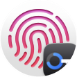

Agents get access. Never your keys.
Keysrs is an MCP server and a loopback gateway for API keys. Your agent calls scan_project and import_and_wrap; secrets move into the macOS Keychain behind one Touch ID, and the env file is rewritten to http://127.0.0.1:12767/<key> plus a project-scoped ksfc_ token with a 30-day expiry. Off the Mac, the same token works through a relay Worker in your own Cloudflare account. No key value crosses the agent, the transcript or git.
Free and MIT licensed. No account. macOS 14+ on Apple Silicon. Then run keys setup mcp once.
.env OPENAI_API_KEY OpenAI …d27e not in vault .env ANTHROPIC_API_KEY Anthropic …9f1a not in vault
Two keys in .env, and neither was ever committed. I'll move them into Keysrs; approve the Touch ID prompt on your Mac.

Keysrs is trying to import and wrap 2 keys for project evals: openai, anthropic.
Touch ID or enter your password to allow this.
The MCP server
Register once.
Every tool returns names, never values.
keys setup mcp writes a keysrs server entry (keys mcp over stdio) into Claude Code, Codex, Cursor, Droid and Claude Desktop, merging around each config's other entries and leaving a .bak. The entry holds the binary's path, never a secret; --remove undoes all five. Tools answer with variable names, providers and last-4 hints; anything that stores a key, issues a token or calls a provider blocks on Touch ID in the app.
Finds the keys, not their values.
Looks through the repo's env files and reports each variable's name, provider, last four characters and whether it's already in your vault.
.env OPENAI_API_KEY OpenAI …d27e in vault
Tells you what git has seen.
For each env file: gitignored or not, tracked or not, ever committed. A key that was ever committed gets one answer: rotate it.
.env.local tracked · committed once
rotate OPENAI_API_KEY
One Touch ID, and the repo is clean.
The keys go into the macOS Keychain. The env file gets a local gateway URL and a token for that project, valid 30 days. The original is backed up outside the project.
wrapped 2 keys for project evals token expires in 30 days
Running containers? The agent asks whether Docker should reach the gateway too. It's off unless you say yes, and the Touch ID prompt names it.
Cloud VMs
Remote agents hold a token.
The key stays on loopback.
A VM, a GitHub Actions runner or a cloud coding session can't reach 127.0.0.1. You deploy the relay Worker into your own Cloudflare account; the Mac dials out wss://<worker>/connect with a relay secret, and the Worker pins that one socket in a Durable Object. keys wrap --relay points the env file's base URL at the Worker. Nothing on the Mac listens on a new port.
- Wrap.One Touch ID. Secrets go to the Keychain; the env file gets
ksfc_tokens andhttps://<worker>/<key>base URLs. - Ship.Copy the file to the VM, the Actions secret or the cloud session. The token is useless without your Mac's gateway: it never authenticates to a provider.
- Relay.The Worker frames each request onto the socket and checks nothing. The Mac replays it to
127.0.0.1:12767, where the gateway validates the token and scope, injects the Keychain secret and streams the response back, SSE included.
$ cat .env OPENAI_API_KEY=ksfc_8f1c…4b2e OPENAI_BASE_URL=https://keysrs-relay.you.workers.dev/evals-openai $ python run_evals.py 48 prompts · via keysrs-relay.you.workers.dev 48/48 ok $ grep -c sk- .env 0
Keysrs is trying to connect the relay to keysrs-relay.you.workers.dev.
Touch ID or enter your password to allow this.
Tools
Sixteen tools.
None of them returns a key.
Everything your agent can ask Keysrs for. Anything that stores a key, hands out access or calls a provider waits for Touch ID; reveal, copy, rotate and delete are not tools at all.
| Tool | What it does | Asks you |
|---|---|---|
scan_project | Finds credential-shaped variables in the repo's env files: name, provider, last four characters, already in the vault or not. | |
check_exposure | Per env file: gitignored, tracked, ever committed. Says "rotate" for any key git has seen. | |
import_and_wrap | Moves the keys into the Keychain and rewrites the file to a gateway URL and a 30-day project token. | Touch ID |
request_grant | Asks for one key for one task, with a time limit. Answers "pending" until you decide. | Touch ID |
grant_status | Pending, approved (with the token, once), denied or expired. | |
list_keys | Key names, providers and expiry. Never values. | |
gateway_info | The local gateway URL and which grants and projects are live. | |
activity | Requests, refusals and estimated spend per project. | |
test_keys | One live call to the provider, only with confirm: true in that call. | Touch ID |
revoke_project | Ends one project's tokens now. | |
revoke_all | Ends every grant and token now. It only takes access away. | |
send_feedback | Scrubs a bug report of keys, tokens, paths and names, then opens an email or issue for you to send. | |
set_analytics_sharing | Records your answer to the opt-in question about aggregate stats. An agent's "on" waits for your own switch in the app. | |
open_app | Shows the Keysrs window. | |
check_update | Current and latest version. | |
version | The app version. |
Grants
Access you can see,
and end in one command.
Mid-task, an agent can ask for a key by name. macOS shows you which key, which host and which project, and nothing happens until you touch the sensor.
A grant is one task, not your key.
Every grant and every project token is fenced in. When it ends, the agent's access ends with it.
- One project, its keysA token works for the keys it was issued for, nothing else.
- Expires on its own30 days for a project token; you pick for a task grant. You're told three days before a token runs out.
- Revoke everything
keys revoke --allends every grant and token now. No Touch ID: it only takes access away. - Rotation revokesRotating a key ends every grant on it. Locking your Mac ends task grants.
What each project did.
Requests, refusals and estimated spend per project, from your agent or the dashboard.
| Project | Requests | Refused | Est. spend |
|---|---|---|---|
| evals | 412 | 0 | $3.18 |
| web-app | 96 | 2 | $0.41 |
| scratch | 7 | 0 | unknown |
Spend is an estimate from a published list-price table. A model it can't price reads as unknown, not $0.
What an agent can't do
Built for the day your agent
gets talked into something.
Assume a prompt injection tells the agent to grab a key. There is no tool for that.
test_keys makes a live call only when you confirm that call.send_feedback scrubs keys, tokens, paths and names, then opens an email or a GitHub issue. You send it.keys unwrap puts the original env files back, and uninstalling offers it first.Behind the MCP server
A quiet Mac app
holds the keys.
No window, no Dock icon, no menu bar item unless you want them. It starts when your agent or the keys command needs it, and it is the only thing that ever reads a key.
Tells you when it matters.
A notification when a grant is waiting for Touch ID, a token is about to expire, or an update was installed.
Updates itself, quietly.
Checks for a release once a day, verifies its checksum and signing identity, and installs only while nothing is waiting on you. You can turn it off.
Adding a key by hand?
keys add asks for the provider with type-ahead, suggests a name and reads the key hidden, twice.
provider: o OpenAI OpenRouter Ollama
The usage meter is still here.
Claude Code, Codex and Grok plan windows and token totals, read from the files those tools already keep. Hidden by default; open the dashboard or turn the menu bar item back on.
Privacy
Built so there's nothing to trust us with.
Not a policy promise. It's how the app is wired, and the source is public so you can check.
Asked once, off unless you agree. Daily totals, never keys, names, paths or prompts.
One WebSocket from your Mac to a Worker in your own Cloudflare account. Never a key.
That is the app. This website is different: it counts visits, and with your OK it remembers you and records masked sessions. Every detail, including the app's exact analytics schema, is in the source and the privacy page.
Download
Free. Yours for good.
MIT licensed: use it, read it, change it, share it. No trial, no account, no license key.
Keysrs for Mac
Open source · every update included
macOS 14+ on Apple Silicon. Then run keys setup mcp and ask your agent.
- MCP server with sixteen tools, for Claude Code, Codex, Cursor, Droid and Claude Desktop
- Project tokens that expire, instead of keys in
.env - Key vault in the Keychain, behind Touch ID
- Relay Worker for VMs and cloud agents, in your own Cloudflare account
- Usage meter for Claude Code, Codex and Grok, when you want it
- MIT licensed, source on GitHub
Not an AI subscription and no API credits: you use your own provider accounts.
Questions
What does my agent actually see?
Variable names, providers, the last four characters of a key, whether it's in your vault, and a token plus a local gateway URL once you approve. Never a key value: no Keysrs tool returns one.
Which agents work with it?
Any agent that speaks MCP. keys setup mcp registers Keysrs with Claude Code, Codex, Cursor, Droid and Claude Desktop for you.
What if a key was already committed?
check_exposure says so, file by file, and recommends rotating that key at the provider. Wrapping it still takes it out of the repo from then on, but a committed key should be treated as leaked.
What happens when the 30 days are up?
The token stops working and you get a notification about three days before. Ask your agent to set the project up again; it's one Touch ID.
How do I undo it?
keys unwrap puts the original lines back in the env file and revokes the project's tokens, after one Touch ID. Uninstalling offers to do this first.
Where's the window?
Keysrs runs in the background. Open it from Applications or Spotlight, or run keys dashboard, to see your keys, grants, activity and usage. The menu bar item can be turned back on in Settings.
How does a VM get a dummy key?
Run keys wrap on the project's env file with your Worker's URL. Copy that file to the VM. Each call goes Worker, your Mac, provider, with the real key added on your Mac. If your Mac is off, nothing is served: a call waits up to a minute, then gets a retryable 503.
Does the Worker see my keys?
No. It's a pipe you deploy from the repo into your own Cloudflare account; Keysrs hosts none. It holds one relay secret that lets your Mac connect and never has a provider key.
Is the dollar figure real?
Tokens are real: they're what your Mac measured. Dollars are an estimate from a published list-price table. Anything unpriced reads as unknown, not $0.
Is it really free?
Yes. Keysrs is MIT-licensed open source with no trial, license key or paid tier.
How does it update?
By itself, if you leave it on: once a day it checks GitHub for a release, verifies the checksum and signing identity, and installs only when nothing is waiting on you. Turn it off in Settings and use Check for Updates instead.
How do I uninstall?
Run keys purge to delete the local catalog and every Keychain item the app created, after Touch ID, then drag Keysrs to the Trash. Nothing is left behind.